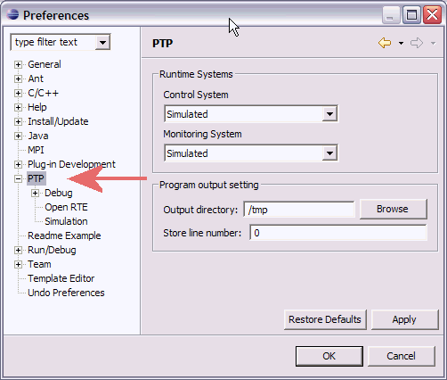
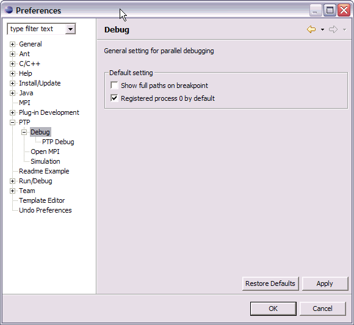
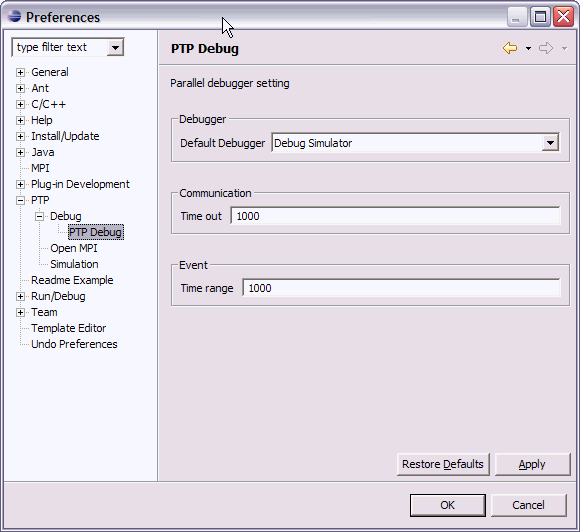
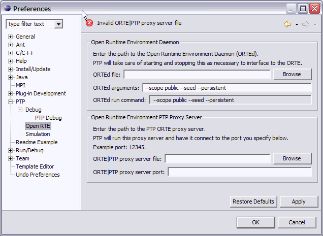
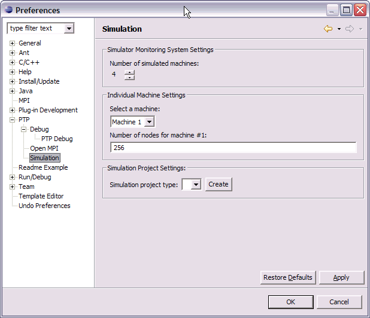

To open the Preferences window, select Window > Preferences... Then select 'PTP' in the list of preferences pages on the left side.
The main page has Runtime Preferences

Debug Preferences



Simulator preferences - for more information, see Launching the simulator.
